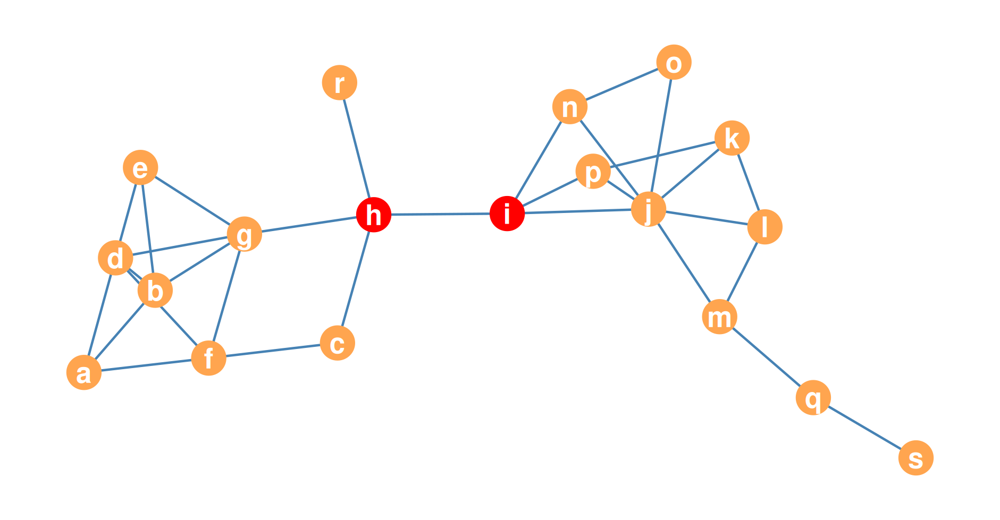
Centrality in Networks
The Big Three Centrality Metrics: Degree, Closeness, and Betweenness
Part 1: What is Centrality?
Where We Are in the Course
1. Individual
2. Dyads
3. Triads
4. Cliques, Communities
5. Whole Network
- The first part of the course follows this organization
- We are now here: the individual level — asking about the importance or strategic location of single nodes in the network
What is Centrality?
- A measure of the importance or strategic location of a node in the network
- Connected to ideas like:
- Popularity and status
- Influence and power
- Autonomy and independence
- Control, risk, and exposure
- Brokerage and belongingness
- Caution (the three-step shuffle!): these English concepts and centrality metrics are related but distinct
- The same concept can be measured by more than one metric, and the same metric speaks to different concepts depending on context and flow type (Borgatti 2005)
The Three Sources of Centrality
A centrality metric is a summary index of a node’s position in a graph, based on sums or averages of one of three things (Borgatti & Everett 2006):
- The number of edges that are directly incident upon that node
- The length of the shortest paths (smaller is better) having that node as one of their end nodes
- The proportion of shortest paths that have that node as one of their inner nodes
- The more/more principle (Freeman 1979): the more a node has of these things, the more central it is!
- Think of these as network goods (or “bads,” when disease or violence flows through the network): centrality should never decrease when a node gains access to more of them
From Metric to Ranking
- Applying a centrality metric to every node produces a ranking of all nodes
- From most central (top) to least central (bottom)
- Different metrics embody different ideas of what it means to be “central” — so they can produce different rankings of the same graph
- The classic three are called the “big three” centrality metrics (Freeman 1979):
- Degree centrality — more edges incident
- Closeness centrality — shorter geodesics as end node
- Betweenness centrality — more geodesics as inner node
Part 2: Centralities Based on Degrees
Degree Centrality (Undirected)
- The simplest (local) centrality measure to compute
- Graph theory definition: the number of edges incident to a node — the cardinality of its set of neighbors
\[C_i^{DEG} = \sum_{j=1}^{n} a_{ij}\]
- In an undirected graph, given by either the row or the column sum vector of the symmetric adjacency matrix
- Once we have the adjacency matrix \(\mathbf{A}\), degree centrality is easy to calculate — just sum the rows!
The Example Graph
- A 19-node undirected graph with a left cluster (a–h) and a right cluster (j–s), joined through nodes h and i
Its Adjacency Matrix
| a | b | c | d | e | f | g | h | i | j | k | l | m | n | o | p | q | r | s | |
|---|---|---|---|---|---|---|---|---|---|---|---|---|---|---|---|---|---|---|---|
| a | 0 | 1 | 0 | 1 | 0 | 1 | 0 | 0 | 0 | 0 | 0 | 0 | 0 | 0 | 0 | 0 | 0 | 0 | 0 |
| b | 1 | 0 | 0 | 1 | 1 | 0 | 1 | 0 | 0 | 0 | 0 | 0 | 0 | 0 | 0 | 0 | 0 | 0 | 0 |
| c | 0 | 0 | 0 | 0 | 0 | 1 | 0 | 1 | 0 | 0 | 0 | 0 | 0 | 0 | 0 | 0 | 0 | 0 | 0 |
| d | 1 | 1 | 0 | 0 | 1 | 1 | 1 | 0 | 0 | 0 | 0 | 0 | 0 | 0 | 0 | 0 | 0 | 0 | 0 |
| e | 0 | 1 | 0 | 1 | 0 | 0 | 1 | 0 | 0 | 0 | 0 | 0 | 0 | 0 | 0 | 0 | 0 | 0 | 0 |
| f | 1 | 0 | 1 | 1 | 0 | 0 | 1 | 0 | 0 | 0 | 0 | 0 | 0 | 0 | 0 | 0 | 0 | 0 | 0 |
| g | 0 | 1 | 0 | 1 | 1 | 1 | 0 | 1 | 0 | 0 | 0 | 0 | 0 | 0 | 0 | 0 | 0 | 0 | 0 |
| h | 0 | 0 | 1 | 0 | 0 | 0 | 1 | 0 | 1 | 0 | 0 | 0 | 0 | 0 | 0 | 0 | 0 | 1 | 0 |
| i | 0 | 0 | 0 | 0 | 0 | 0 | 0 | 1 | 0 | 1 | 0 | 0 | 0 | 1 | 0 | 1 | 0 | 0 | 0 |
| j | 0 | 0 | 0 | 0 | 0 | 0 | 0 | 0 | 1 | 0 | 1 | 1 | 1 | 1 | 1 | 1 | 0 | 0 | 0 |
| k | 0 | 0 | 0 | 0 | 0 | 0 | 0 | 0 | 0 | 1 | 0 | 1 | 0 | 0 | 0 | 1 | 0 | 0 | 0 |
| l | 0 | 0 | 0 | 0 | 0 | 0 | 0 | 0 | 0 | 1 | 1 | 0 | 1 | 0 | 0 | 0 | 0 | 0 | 0 |
| m | 0 | 0 | 0 | 0 | 0 | 0 | 0 | 0 | 0 | 1 | 0 | 1 | 0 | 0 | 0 | 0 | 1 | 0 | 0 |
| n | 0 | 0 | 0 | 0 | 0 | 0 | 0 | 0 | 1 | 1 | 0 | 0 | 0 | 0 | 1 | 0 | 0 | 0 | 0 |
| o | 0 | 0 | 0 | 0 | 0 | 0 | 0 | 0 | 0 | 1 | 0 | 0 | 0 | 1 | 0 | 0 | 0 | 0 | 0 |
| p | 0 | 0 | 0 | 0 | 0 | 0 | 0 | 0 | 1 | 1 | 1 | 0 | 0 | 0 | 0 | 0 | 0 | 0 | 0 |
| q | 0 | 0 | 0 | 0 | 0 | 0 | 0 | 0 | 0 | 0 | 0 | 0 | 1 | 0 | 0 | 0 | 0 | 0 | 1 |
| r | 0 | 0 | 0 | 0 | 0 | 0 | 0 | 1 | 0 | 0 | 0 | 0 | 0 | 0 | 0 | 0 | 0 | 0 | 0 |
| s | 0 | 0 | 0 | 0 | 0 | 0 | 0 | 0 | 0 | 0 | 0 | 0 | 0 | 0 | 0 | 0 | 1 | 0 | 0 |
Degree Centrality from the Adjacency Matrix
- We can obtain the degree centrality of each node by summing up the rows of the adjacency matrix!
| a | b | c | d | e | f | g | h | i | j | k | l | m | n | o | p | q | r | s | |
|---|---|---|---|---|---|---|---|---|---|---|---|---|---|---|---|---|---|---|---|
| a | 0 | 1 | 0 | 1 | 0 | 1 | 0 | 0 | 0 | 0 | 0 | 0 | 0 | 0 | 0 | 0 | 0 | 0 | 0 |
| b | 1 | 0 | 0 | 1 | 1 | 0 | 1 | 0 | 0 | 0 | 0 | 0 | 0 | 0 | 0 | 0 | 0 | 0 | 0 |
| c | 0 | 0 | 0 | 0 | 0 | 1 | 0 | 1 | 0 | 0 | 0 | 0 | 0 | 0 | 0 | 0 | 0 | 0 | 0 |
| d | 1 | 1 | 0 | 0 | 1 | 1 | 1 | 0 | 0 | 0 | 0 | 0 | 0 | 0 | 0 | 0 | 0 | 0 | 0 |
| e | 0 | 1 | 0 | 1 | 0 | 0 | 1 | 0 | 0 | 0 | 0 | 0 | 0 | 0 | 0 | 0 | 0 | 0 | 0 |
| f | 1 | 0 | 1 | 1 | 0 | 0 | 1 | 0 | 0 | 0 | 0 | 0 | 0 | 0 | 0 | 0 | 0 | 0 | 0 |
| g | 0 | 1 | 0 | 1 | 1 | 1 | 0 | 1 | 0 | 0 | 0 | 0 | 0 | 0 | 0 | 0 | 0 | 0 | 0 |
| h | 0 | 0 | 1 | 0 | 0 | 0 | 1 | 0 | 1 | 0 | 0 | 0 | 0 | 0 | 0 | 0 | 0 | 1 | 0 |
| i | 0 | 0 | 0 | 0 | 0 | 0 | 0 | 1 | 0 | 1 | 0 | 0 | 0 | 1 | 0 | 1 | 0 | 0 | 0 |
| j | 0 | 0 | 0 | 0 | 0 | 0 | 0 | 0 | 1 | 0 | 1 | 1 | 1 | 1 | 1 | 1 | 0 | 0 | 0 |
| k | 0 | 0 | 0 | 0 | 0 | 0 | 0 | 0 | 0 | 1 | 0 | 1 | 0 | 0 | 0 | 1 | 0 | 0 | 0 |
| l | 0 | 0 | 0 | 0 | 0 | 0 | 0 | 0 | 0 | 1 | 1 | 0 | 1 | 0 | 0 | 0 | 0 | 0 | 0 |
| m | 0 | 0 | 0 | 0 | 0 | 0 | 0 | 0 | 0 | 1 | 0 | 1 | 0 | 0 | 0 | 0 | 1 | 0 | 0 |
| n | 0 | 0 | 0 | 0 | 0 | 0 | 0 | 0 | 1 | 1 | 0 | 0 | 0 | 0 | 1 | 0 | 0 | 0 | 0 |
| o | 0 | 0 | 0 | 0 | 0 | 0 | 0 | 0 | 0 | 1 | 0 | 0 | 0 | 1 | 0 | 0 | 0 | 0 | 0 |
| p | 0 | 0 | 0 | 0 | 0 | 0 | 0 | 0 | 1 | 1 | 1 | 0 | 0 | 0 | 0 | 0 | 0 | 0 | 0 |
| q | 0 | 0 | 0 | 0 | 0 | 0 | 0 | 0 | 0 | 0 | 0 | 0 | 1 | 0 | 0 | 0 | 0 | 0 | 1 |
| r | 0 | 0 | 0 | 0 | 0 | 0 | 0 | 1 | 0 | 0 | 0 | 0 | 0 | 0 | 0 | 0 | 0 | 0 | 0 |
| s | 0 | 0 | 0 | 0 | 0 | 0 | 0 | 0 | 0 | 0 | 0 | 0 | 0 | 0 | 0 | 0 | 1 | 0 | 0 |
- Node j has the most ties: its row has seven 1s (columns i through p):
\[k_j = \underbrace{1 + 1 + \cdots + 1}_{7 \text{ ones}} = 7\]
- Node r has the fewest: all 0s except \(a_{rh}\):
\[k_r = a_{rh} = 1\]
The Degree Centrality Ranking
| node | score | node | score |
|---|---|---|---|
| j | 7 | l | 3 |
| d | 5 | m | 3 |
| g | 5 | n | 3 |
| b | 4 | p | 3 |
| f | 4 | c | 2 |
| h | 4 | o | 2 |
| i | 4 | q | 2 |
| a | 3 | r | 1 |
| e | 3 | s | 1 |
| k | 3 |
- Node j (7 ties, highlighted) tops the ranking; r and s (1 tie each) sit at the bottom
- Popularity, in graph-theoretic form
Normalized Degree Centrality
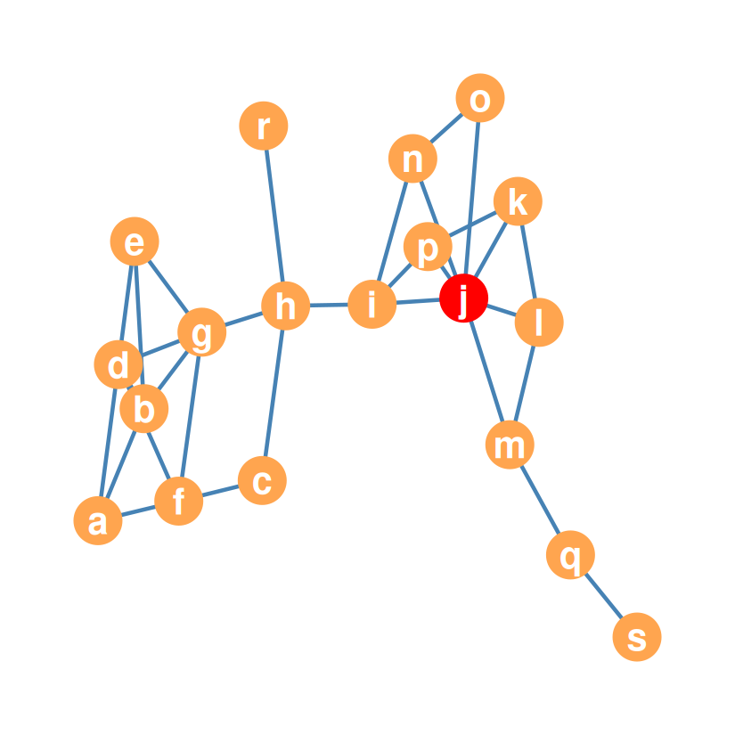
- Ranges 0–1: 20 friends is \(\approx 0.02\) in the big school, \(\approx 0.20\) in the small one.
Raw degree is sensitive to network size
Freeman (1979) proposed normalizing by the maximum possible degree, \(N - 1\): \(C_{i(norm)}^{DEG} = C_i^{DEG} / (N - 1)\)
In our example graph, \(N = 19\), so the maximum possible degree is \(N - 1 = 18\)
Example: j scores \(7/18 = 0.39\); r scores \(1/18 = 0.06\) (top and bottom of the table)
| node | score | node | score |
|---|---|---|---|
| j | 0.39 | l | 0.17 |
| d | 0.28 | m | 0.17 |
| g | 0.28 | n | 0.17 |
| b | 0.22 | p | 0.17 |
| f | 0.22 | c | 0.11 |
| h | 0.22 | o | 0.11 |
| i | 0.22 | q | 0.11 |
| a | 0.17 | r | 0.06 |
| e | 0.17 | s | 0.06 |
| k | 0.17 |
Degree Centrality (Directed)
- In directed graphs, nodes have two separate types of degree centrality:
\[C_i^{OUT} = \sum_j a_{ij} \qquad C_j^{IN} = \sum_i a_{ij}\]
- Outdegree centrality: cardinality of the set of out-neighbors (rows)
- How many others does this node send ties to? Sociability or expansiveness
- Indegree centrality: cardinality of the set of in-neighbors (columns)
- How many others seek this node out? A kind of status
The Directed Example
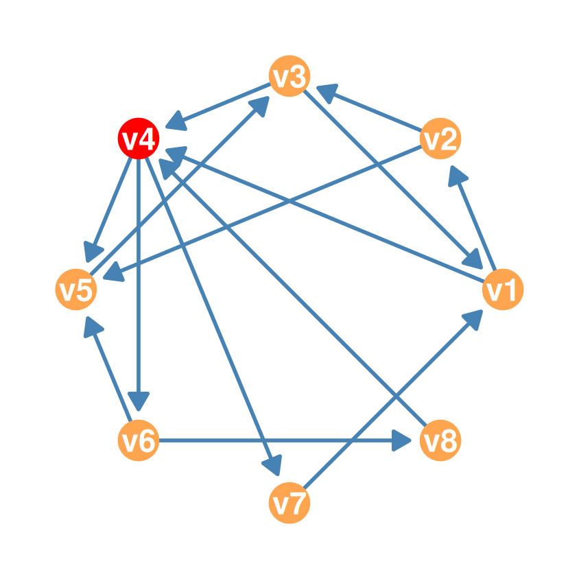
| v1 | v2 | v3 | v4 | v5 | v6 | v7 | v8 | |
|---|---|---|---|---|---|---|---|---|
| v1 | 0 | 1 | 0 | 1 | 0 | 0 | 0 | 0 |
| v2 | 0 | 0 | 1 | 0 | 1 | 0 | 0 | 0 |
| v3 | 1 | 0 | 0 | 1 | 0 | 0 | 0 | 0 |
| v4 | 0 | 0 | 0 | 0 | 1 | 1 | 1 | 0 |
| v5 | 0 | 0 | 1 | 0 | 0 | 0 | 0 | 0 |
| v6 | 0 | 0 | 0 | 0 | 1 | 0 | 0 | 1 |
| v7 | 1 | 0 | 0 | 0 | 0 | 0 | 0 | 0 |
| v8 | 0 | 0 | 0 | 1 | 0 | 0 | 0 | 0 |
- A strongly connected directed graph: everyone can reach everyone
Outdegree and Indegree Vectors
- Outdegree = summing the rows of the asymmetric adjacency matrix
- Indegree = summing the columns
Outdegree ranking
| node | outdeg | norm | node | outdeg | norm |
|---|---|---|---|---|---|
| v4 | 3 | 0.43 | v6 | 2 | 0.29 |
| v1 | 2 | 0.29 | v5 | 1 | 0.14 |
| v2 | 2 | 0.29 | v7 | 1 | 0.14 |
| v3 | 2 | 0.29 | v8 | 1 | 0.14 |
Indegree ranking
| node | indeg | norm | node | indeg | norm |
|---|---|---|---|---|---|
| v4 | 3 | 0.43 | v2 | 1 | 0.14 |
| v5 | 3 | 0.43 | v6 | 1 | 0.14 |
| v1 | 2 | 0.29 | v7 | 1 | 0.14 |
| v3 | 2 | 0.29 | v8 | 1 | 0.14 |
- We get separate rankings by outdegree and indegree!
- v4 is highest on both (\(C^{OUT} = 3\), \(C^{IN} = 3\)) — an active sociability and high status
- Normalized by \(N - 1 = 7\), as before
Part 3: Centralities Based on the Geodesic Distance
Closeness Centrality
- Sometimes what matters is not how many people you know directly, but being indirectly connected to a lot of others
- A node that can reach all the other nodes in the graph via the shortest paths (on average) has the largest closeness centrality!
- The closeness between two nodes is the inverse of their geodesic distance: \(\frac{1}{d_{ij}}\) (Bavelas 1950)
- Pairwise geodesic distances for every pair live in the geodesic distance matrix
The Most Closeness-Central Node
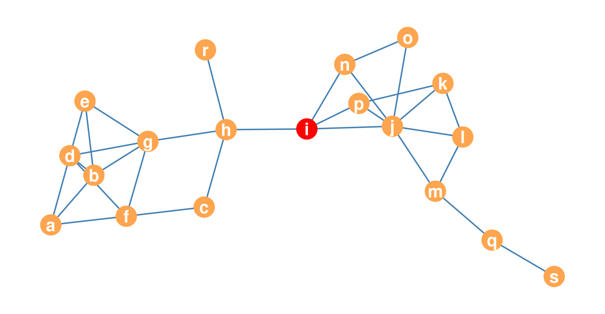
- In this graph, node i has the largest closeness centrality!
Worked Example: Distances from Node i
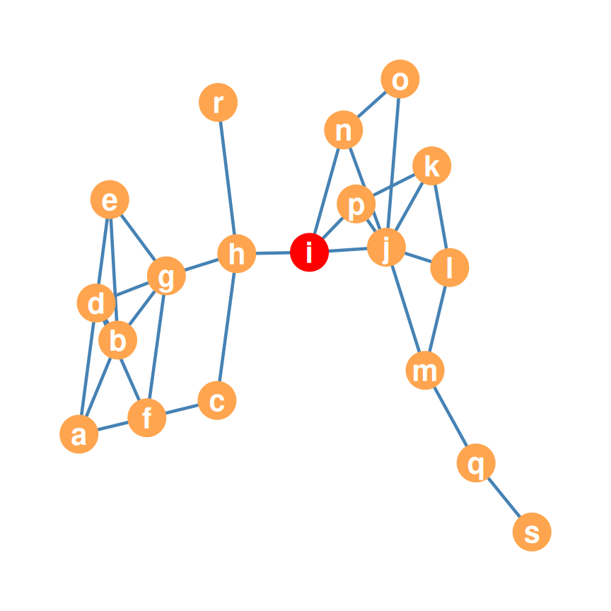
- To compute \(C^{CLOS}(i)\), list the shortest-path distance from i to every other node:
| a | b | c | d | e | f | g | h | i | j | k | l | m | n | o | p | q | r | s |
|---|---|---|---|---|---|---|---|---|---|---|---|---|---|---|---|---|---|---|
| 4 | 3 | 2 | 3 | 3 | 3 | 2 | 1 | 0 | 1 | 2 | 2 | 2 | 1 | 2 | 1 | 3 | 2 | 4 |
\[C^{CLOS}(i) = \frac{N - 1}{\sum_j d_{ij}} = \frac{18}{41} = \mathbf{0.44}\]
The Geodesic Distance Matrix
| a | b | c | d | e | f | g | h | i | j | k | l | m | n | o | p | q | r | s | |
|---|---|---|---|---|---|---|---|---|---|---|---|---|---|---|---|---|---|---|---|
| a | 0 | 1 | 2 | 1 | 2 | 1 | 2 | 3 | 4 | 5 | 6 | 6 | 6 | 5 | 6 | 5 | 7 | 4 | 8 |
| b | 1 | 0 | 3 | 1 | 1 | 2 | 1 | 2 | 3 | 4 | 5 | 5 | 5 | 4 | 5 | 4 | 6 | 3 | 7 |
| c | 2 | 3 | 0 | 2 | 3 | 1 | 2 | 1 | 2 | 3 | 4 | 4 | 4 | 3 | 4 | 3 | 5 | 2 | 6 |
| d | 1 | 1 | 2 | 0 | 1 | 1 | 1 | 2 | 3 | 4 | 5 | 5 | 5 | 4 | 5 | 4 | 6 | 3 | 7 |
| e | 2 | 1 | 3 | 1 | 0 | 2 | 1 | 2 | 3 | 4 | 5 | 5 | 5 | 4 | 5 | 4 | 6 | 3 | 7 |
| f | 1 | 2 | 1 | 1 | 2 | 0 | 1 | 2 | 3 | 4 | 5 | 5 | 5 | 4 | 5 | 4 | 6 | 3 | 7 |
| g | 2 | 1 | 2 | 1 | 1 | 1 | 0 | 1 | 2 | 3 | 4 | 4 | 4 | 3 | 4 | 3 | 5 | 2 | 6 |
| h | 3 | 2 | 1 | 2 | 2 | 2 | 1 | 0 | 1 | 2 | 3 | 3 | 3 | 2 | 3 | 2 | 4 | 1 | 5 |
| i | 4 | 3 | 2 | 3 | 3 | 3 | 2 | 1 | 0 | 1 | 2 | 2 | 2 | 1 | 2 | 1 | 3 | 2 | 4 |
| j | 5 | 4 | 3 | 4 | 4 | 4 | 3 | 2 | 1 | 0 | 1 | 1 | 1 | 1 | 1 | 1 | 2 | 3 | 3 |
| k | 6 | 5 | 4 | 5 | 5 | 5 | 4 | 3 | 2 | 1 | 0 | 1 | 2 | 2 | 2 | 1 | 3 | 4 | 4 |
| l | 6 | 5 | 4 | 5 | 5 | 5 | 4 | 3 | 2 | 1 | 1 | 0 | 1 | 2 | 2 | 2 | 2 | 4 | 3 |
| m | 6 | 5 | 4 | 5 | 5 | 5 | 4 | 3 | 2 | 1 | 2 | 1 | 0 | 2 | 2 | 2 | 1 | 4 | 2 |
| n | 5 | 4 | 3 | 4 | 4 | 4 | 3 | 2 | 1 | 1 | 2 | 2 | 2 | 0 | 1 | 2 | 3 | 3 | 4 |
| o | 6 | 5 | 4 | 5 | 5 | 5 | 4 | 3 | 2 | 1 | 2 | 2 | 2 | 1 | 0 | 2 | 3 | 4 | 4 |
| p | 5 | 4 | 3 | 4 | 4 | 4 | 3 | 2 | 1 | 1 | 1 | 2 | 2 | 2 | 2 | 0 | 3 | 3 | 4 |
| q | 7 | 6 | 5 | 6 | 6 | 6 | 5 | 4 | 3 | 2 | 3 | 2 | 1 | 3 | 3 | 3 | 0 | 5 | 1 |
| r | 4 | 3 | 2 | 3 | 3 | 3 | 2 | 1 | 2 | 3 | 4 | 4 | 4 | 3 | 4 | 3 | 5 | 0 | 6 |
| s | 8 | 7 | 6 | 7 | 7 | 7 | 6 | 5 | 4 | 3 | 4 | 3 | 2 | 4 | 4 | 4 | 1 | 6 | 0 |
Farness: The Row Sums of the Distance Matrix
- Row sums of the distance matrix = total shortest-path distance to all others
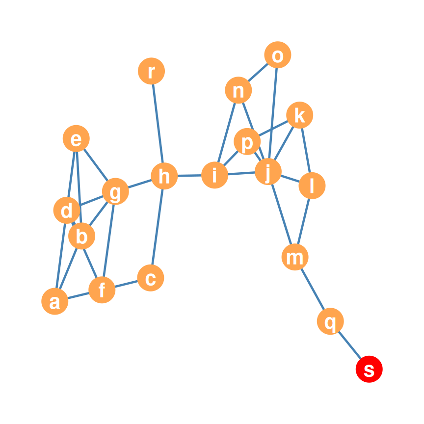
- Bigger = worse: this is farness, not closeness!
| node | farness | node | farness |
|---|---|---|---|
| a | 74 | k | 59 |
| b | 62 | l | 57 |
| c | 54 | m | 56 |
| d | 60 | n | 50 |
| e | 63 | o | 60 |
| f | 61 | p | 50 |
| g | 49 | q | 71 |
| h | 42 | r | 59 |
| i | 41 | s | 88 |
| j | 44 |
- Node s is the most distant node (farness = 88)
From Farness to Closeness
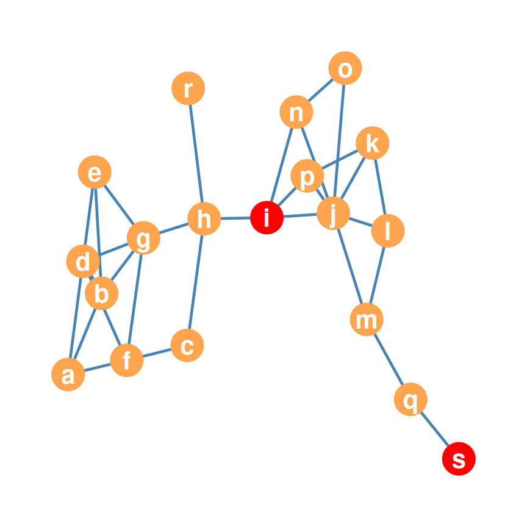
- Ranges 0–1: i tops it (0.44), s sits at the bottom (0.20)
- We want closeness, not farness — so we reverse the scores by dividing \(N - 1\) by each row sum (Freeman 1979): \(C_i^{CLOS} = (N - 1) / \sum_j d_{ij}\)
| node | farness | closeness | node | farness | closeness |
|---|---|---|---|---|---|
| a | 74 | 0.24 | k | 59 | 0.31 |
| b | 62 | 0.29 | l | 57 | 0.32 |
| c | 54 | 0.33 | m | 56 | 0.32 |
| d | 60 | 0.30 | n | 50 | 0.36 |
| e | 63 | 0.29 | o | 60 | 0.3 |
| f | 61 | 0.30 | p | 50 | 0.36 |
| g | 49 | 0.37 | q | 71 | 0.25 |
| h | 42 | 0.43 | r | 59 | 0.31 |
| i | 41 | 0.44 | s | 88 | 0.2 |
| j | 44 | 0.41 |
The Closeness Centrality Ranking

| node | score | node | score |
|---|---|---|---|
| i | 0.44 | r | 0.31 |
| h | 0.43 | d | 0.3 |
| j | 0.41 | f | 0.3 |
| g | 0.37 | o | 0.3 |
| n | 0.36 | b | 0.29 |
| p | 0.36 | e | 0.29 |
| c | 0.33 | q | 0.25 |
| l | 0.32 | a | 0.24 |
| m | 0.32 | s | 0.2 |
| k | 0.31 |
- Node i has the largest closeness centrality (0.44) even though it doesn’t have the largest degree (that was j)!
- Closeness and degree capture different things — the rankings disagree
- Practical use (ch. 19): seed i first to spread an innovation — also the worst node to infect!
Closeness Centrality in Directed Graphs
- Compute closeness in a directed graph as long as the graph is strongly connected — fill up the geodesic distance matrix as usual, starting from the adjacency matrix:

| v1 | v2 | v3 | v4 | v5 | v6 | v7 | v8 | |
|---|---|---|---|---|---|---|---|---|
| v1 | 0 | 1 | 0 | 1 | 0 | 0 | 0 | 0 |
| v2 | 0 | 0 | 1 | 0 | 1 | 0 | 0 | 0 |
| v3 | 1 | 0 | 0 | 1 | 0 | 0 | 0 | 0 |
| v4 | 0 | 0 | 0 | 0 | 1 | 1 | 1 | 0 |
| v5 | 0 | 0 | 1 | 0 | 0 | 0 | 0 | 0 |
| v6 | 0 | 0 | 0 | 0 | 1 | 0 | 0 | 1 |
| v7 | 1 | 0 | 0 | 0 | 0 | 0 | 0 | 0 |
| v8 | 0 | 0 | 0 | 1 | 0 | 0 | 0 | 0 |
The Directed Geodesic Distance Matrix
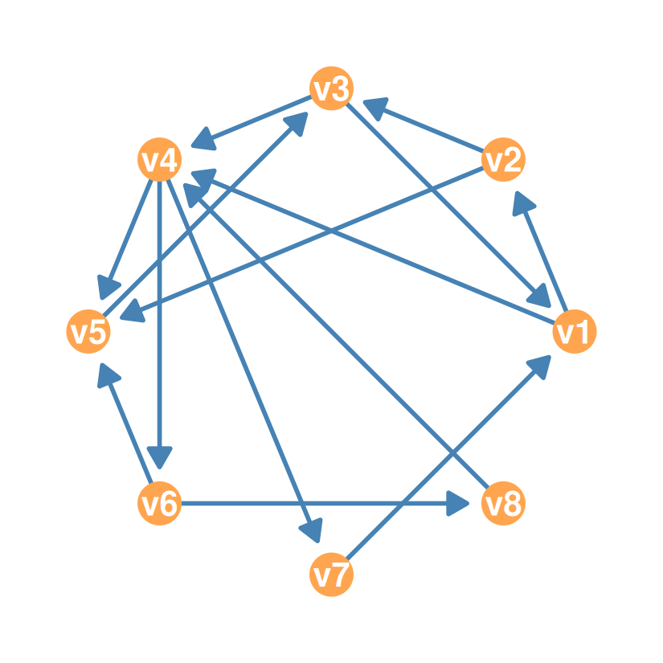
- Filling in shortest-path distances works as usual — except the matrix is now asymmetric!
| v1 | v2 | v3 | v4 | v5 | v6 | v7 | v8 | |
|---|---|---|---|---|---|---|---|---|
| v1 | 0 | 1 | 2 | 1 | 2 | 2 | 2 | 3 |
| v2 | 2 | 0 | 1 | 2 | 1 | 3 | 3 | 4 |
| v3 | 1 | 2 | 0 | 1 | 2 | 2 | 2 | 3 |
| v4 | 2 | 3 | 2 | 0 | 1 | 1 | 1 | 2 |
| v5 | 2 | 3 | 1 | 2 | 0 | 3 | 3 | 4 |
| v6 | 3 | 4 | 2 | 2 | 1 | 0 | 3 | 1 |
| v7 | 1 | 2 | 3 | 2 | 3 | 3 | 0 | 4 |
| v8 | 3 | 4 | 3 | 1 | 2 | 2 | 2 | 0 |
Directed Closeness: Row Sums and Ranking
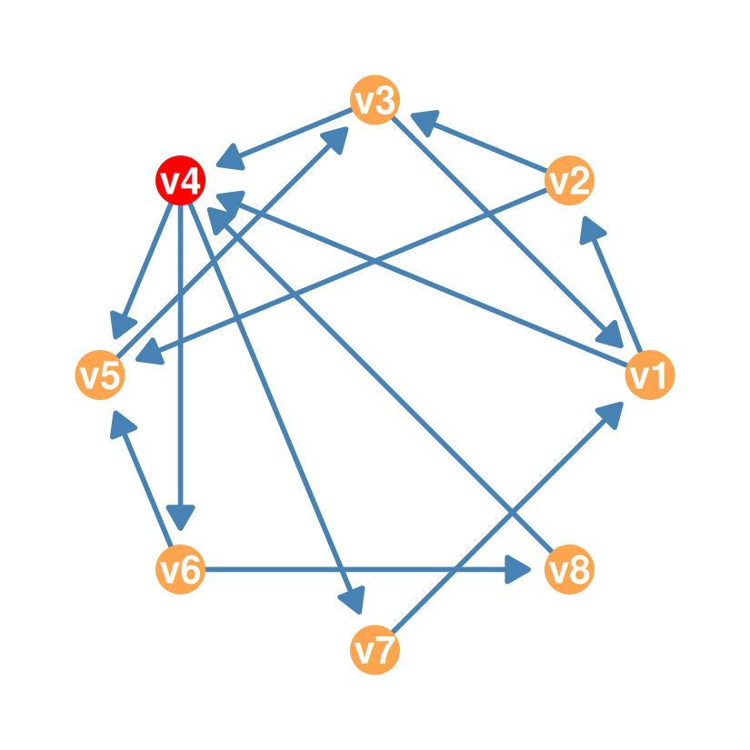
| node | farness | closeness |
|---|---|---|
| v1 | 13 | 0.54 |
| v2 | 16 | 0.44 |
| v3 | 13 | 0.54 |
| v4 | 12 | 0.58 |
| v5 | 18 | 0.39 |
| v6 | 16 | 0.44 |
| v7 | 18 | 0.39 |
| v8 | 17 | 0.41 |
- Node v4 has the largest closeness (0.58) — it is nearest to most nodes
- Note the directionality: v4’s high outdegree and good reach drive this
- Rank order differs from both the outdegree and indegree rankings!
Houston, We Have a Problem
- Now consider a weakly connected directed graph: delete the return ties \(v_1 \to v_2\), \(v_4 \to v_7\), and \(v_5 \to v_3\)

| v1 | v2 | v3 | v4 | v5 | v6 | v7 | v8 | |
|---|---|---|---|---|---|---|---|---|
| v1 | 0 | 0 | 0 | 1 | 0 | 0 | 0 | 0 |
| v2 | 0 | 0 | 1 | 0 | 1 | 0 | 0 | 0 |
| v3 | 1 | 0 | 0 | 1 | 0 | 0 | 0 | 0 |
| v4 | 0 | 0 | 0 | 0 | 1 | 1 | 0 | 0 |
| v5 | 0 | 0 | 0 | 0 | 0 | 0 | 0 | 0 |
| v6 | 0 | 0 | 0 | 0 | 1 | 0 | 0 | 1 |
| v7 | 1 | 0 | 0 | 0 | 0 | 0 | 0 | 0 |
| v8 | 0 | 0 | 0 | 1 | 0 | 0 | 0 | 0 |
- No one can reach nodes v2 and v7 (pure transmitters)
- Node v5 can reach no one (pure receiver)
The Row Sums Turn to Infinity
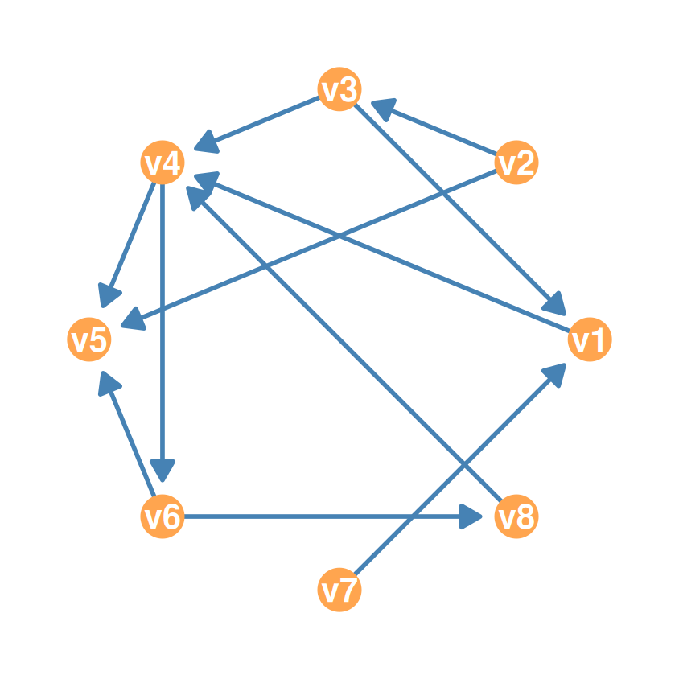
| v1 | v2 | v3 | v4 | v5 | v6 | v7 | v8 | |
|---|---|---|---|---|---|---|---|---|
| v1 | 0 | Inf | Inf | 1 | 2 | 2 | Inf | 3 |
| v2 | 2 | 0 | 1 | 2 | 1 | 3 | Inf | 4 |
| v3 | 1 | Inf | 0 | 1 | 2 | 2 | Inf | 3 |
| v4 | Inf | Inf | Inf | 0 | 1 | 1 | Inf | 2 |
| v5 | Inf | Inf | Inf | Inf | 0 | Inf | Inf | Inf |
| v6 | Inf | Inf | Inf | 2 | 1 | 0 | Inf | 1 |
| v7 | 1 | Inf | Inf | 2 | 3 | 3 | 0 | 4 |
| v8 | Inf | Inf | Inf | 1 | 2 | 2 | Inf | 0 |
- The geodesic distance between some pairs is now infinity — and the row sums turn into Infs: for any number \(x\), \(x + \infty = \infty\)
- Closeness is undefined!
The Solution: Harmonic Centrality
- The fix (Beauchamp 1965; Boldi & Vigna 2014): sum the inverses of the geodesic distances, not the inverse of their sum:
\[C_i^{HARM} = \frac{1}{N-1}\sum_j \frac{1}{d_{ij}}\]
- This solves the “infinity” problem because:
\[\frac{1}{\infty} = 0\]
- Order of operations matters: first invert each distance, then sum — unreachable nodes contribute zero instead of blowing everything up
Harmonic Centrality: Worked Example
- Take the inverse of each cell of the weakly connected geodesic distance matrix:
| v1 | v2 | v3 | v4 | v5 | v6 | v7 | v8 | |
|---|---|---|---|---|---|---|---|---|
| v1 | 0 | Inf | Inf | 1 | 2 | 2 | Inf | 3 |
| v2 | 2 | 0 | 1 | 2 | 1 | 3 | Inf | 4 |
| v3 | 1 | Inf | 0 | 1 | 2 | 2 | Inf | 3 |
| v4 | Inf | Inf | Inf | 0 | 1 | 1 | Inf | 2 |
| v5 | Inf | Inf | Inf | Inf | 0 | Inf | Inf | Inf |
| v6 | Inf | Inf | Inf | 2 | 1 | 0 | Inf | 1 |
| v7 | 1 | Inf | Inf | 2 | 3 | 3 | 0 | 4 |
| v8 | Inf | Inf | Inf | 1 | 2 | 2 | Inf | 0 |
| v1 | v2 | v3 | v4 | v5 | v6 | v7 | v8 | |
|---|---|---|---|---|---|---|---|---|
| v1 | 0.0 | 0 | 0 | 1.0 | 0.50 | 0.50 | 0 | 0.33 |
| v2 | 0.5 | 0 | 1 | 0.5 | 1.00 | 0.33 | 0 | 0.25 |
| v3 | 1.0 | 0 | 0 | 1.0 | 0.50 | 0.50 | 0 | 0.33 |
| v4 | 0.0 | 0 | 0 | 0.0 | 1.00 | 1.00 | 0 | 0.50 |
| v5 | 0.0 | 0 | 0 | 0.0 | 0.00 | 0.00 | 0 | 0.00 |
| v6 | 0.0 | 0 | 0 | 0.5 | 1.00 | 0.00 | 0 | 1.00 |
| v7 | 1.0 | 0 | 0 | 0.5 | 0.33 | 0.33 | 0 | 0.25 |
| v8 | 0.0 | 0 | 0 | 1.0 | 0.50 | 0.50 | 0 | 0.00 |
- No more infinities — unreachable pairs become zeroes! Sum row v2, divide by \(N - 1 = 7\):
\[C_{v2}^{HARM} = \tfrac{1}{7}(0.5 + 0 + 1 + 0.5 + 1 + 0.33 + 0 + 0.25) = 0.51\]
The Harmonic Centrality Ranking
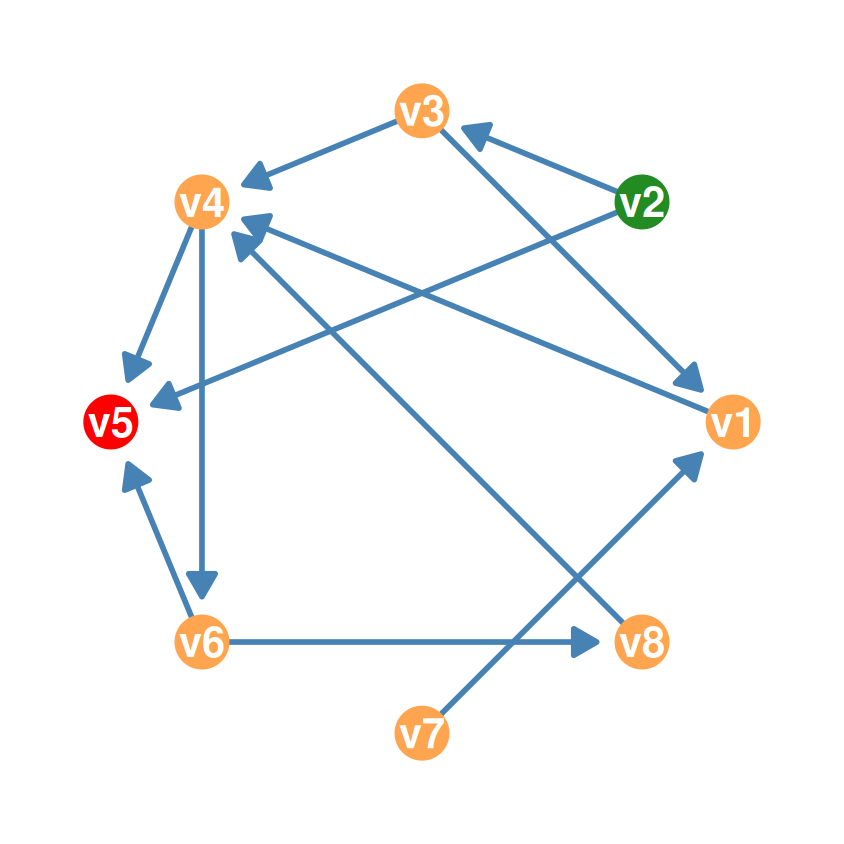
| node | harmonic | normalized |
|---|---|---|
| v2 | 3.58 | 0.51 |
| v3 | 3.33 | 0.48 |
| v4 | 2.50 | 0.36 |
| v6 | 2.50 | 0.36 |
| v7 | 2.42 | 0.35 |
| v1 | 2.33 | 0.33 |
| v8 | 2.00 | 0.29 |
| v5 | 0.00 | 0.00 |
- v2 (green) is now highest (0.51): even though nobody can reach it, it can reach almost everybody quickly
- v5 (red) gets exactly 0: it can reach no one at all
- Harmonic centrality is defined for all graphs — connected or not!
Part 4: Centralities Based on Shortest Paths
Betweenness Centrality
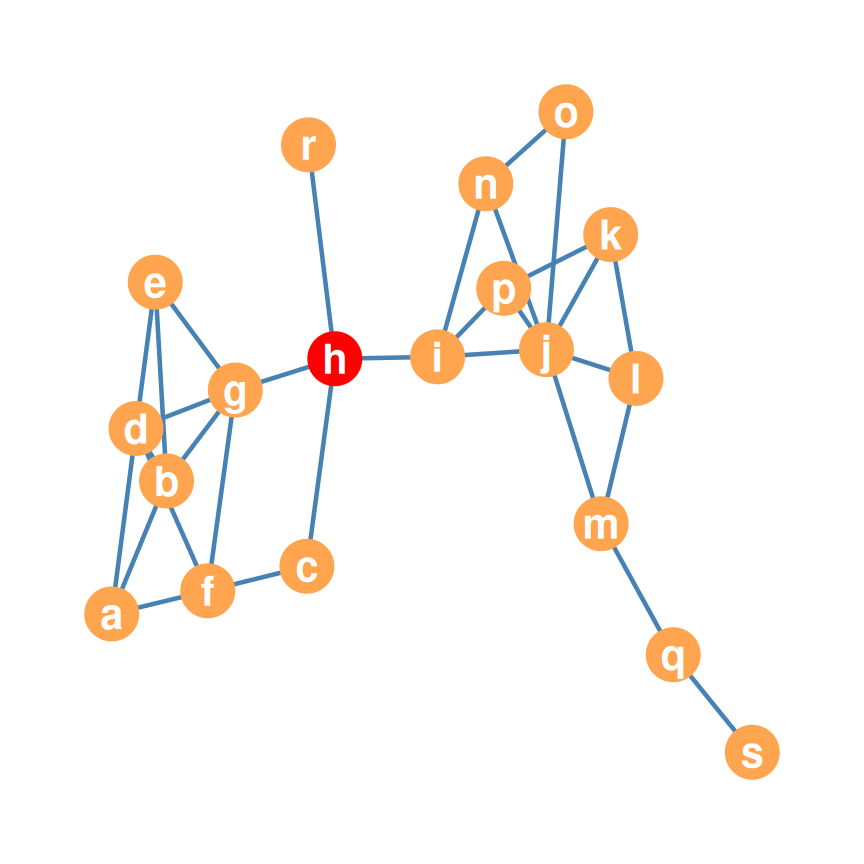
- Betweenness centrality asks: how often does a node sit in the middle of shortest paths connecting other pairs of nodes?
- Picture messages, rumors, or goods traveling from node to node along shortest paths
- A high-betweenness node is a middleperson: a large share of those trips pass straight through it
- In our 19-node graph, node h stands on the shortest path between g and i: \(g \to h \to i\)
- Also on the shortest paths between p and c, and between k and r
- h must have high betweenness: it connects the nodes on the left of the graph with the nodes on the right
- Node g is also high-betweenness — but not as high as h!
What is an “Inner Node”?
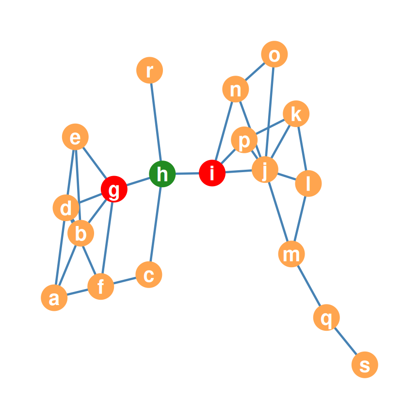
- Pick any two other nodes — say g and i (the red endpoints)
- This graph has exactly one shortest path between them: \(g \to h \to i\)
- h is the inner node — the middleperson (green)
- Every trip between g and i passes through h: \(p_{g(h)i} = 1\) — a full point for h!
- Betweenness: collect h’s share for every pair of other nodes, then add it all up
Stress Centrality: A First Attempt
- A first attempt at betweenness: for each node \(k\), count how many shortest paths between every other pair \(i, j\) feature \(k\) as an inner node — the total traffic through \(k\) (Shimbel 1953): \(C^{STRESS}_k = \sum_{i \neq k} \sum_{j \neq k} n_{i(k)j}\)

| node | stress | node | stress |
|---|---|---|---|
| a | 4 | k | 2 |
| b | 32 | l | 6 |
| c | 56 | m | 84 |
| d | 40 | n | 28 |
| e | 0 | o | 0 |
| f | 74 | p | 28 |
| g | 208 | q | 44 |
| h | 316 | r | 0 |
| i | 288 | s | 0 |
| j | 206 |
The Problem with Stress: It Counts, Not Weighs
- Stress centrality treats all shortest paths equally — whether a node sits on all the paths between a pair or on just one of many
- In our graph, the stress and betweenness rankings disagree:
- Stress: h (316), i (288), g (208), j (206)…
- Betweenness: h (88.1), i (81.5), j (66.5), g (53)…
- j and g swap places!
- The fix (Anthonisse 1971; Freeman 1977): use the proportion of shortest paths a node stands on, not the raw count
Relative Betweenness: A Worked Example
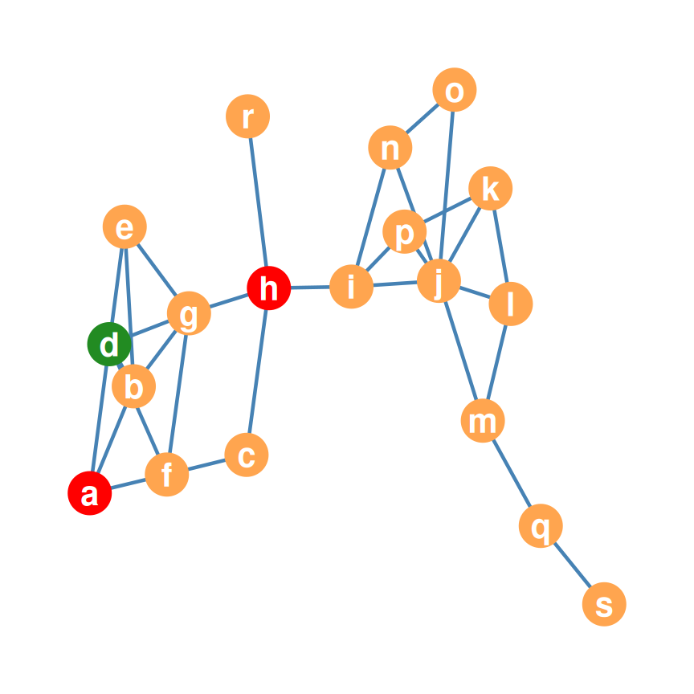
- The relative betweenness of \(k\) w.r.t. nodes \(i, j\) = the proportion of shortest paths between \(i\) and \(j\) that feature \(k\) as an inner node
- What is \(d\)’s relative betweenness w.r.t. \(h\) and \(a\)? (endpoints in red; the candidate inner node d in green)
First, list all shortest paths between h and a:
- \(\{h, g, d, a\}\) — d is on this path!
- \(\{h, c, f, a\}\) — d is not
- \(\{h, g, b, a\}\) — d is not
- \(\{h, g, f, a\}\) — d is not
- So \(d\) appears on 1 out of 4 shortest paths: \(p_{h(d)a} = \frac{1}{4} = \mathbf{0.25}\)
- Interpretation: a random \(h\)-to-\(a\) shortest path has a 25% chance of going through \(d\)
Betweenness Centrality: The Formula
- The worked example, turned into a recipe — for each node \(k\):
- Pick every pair of other nodes \(i, j\) — the endpoints
- Find all their shortest paths; count them: \(g_{ij}\)
- Count the ones featuring \(k\) as an inner node: \(g_{i(k)j}\)
- Add up each pair’s fraction \(g_{i(k)j}/g_{ij}\) over all pairs:
\[C_k^{BET} = \sum_{i \neq k} \sum_{j \neq k} \frac{g_{i(k)j}}{g_{ij}}\]
- From the example: pair \((h, a)\) contributed \(\frac{1}{4} = 0.25\) to d’s total
- A full point when \(k\) sits on all paths between a pair; a fraction otherwise
The Betweenness Centrality Ranking

| node | score | node | score |
|---|---|---|---|
| h | 88.1 | p | 5 |
| i | 81.5 | b | 3.8 |
| j | 66.5 | l | 1.5 |
| g | 53.0 | a | 0.6 |
| m | 32.0 | k | 0.5 |
| q | 17.0 | e | 0 |
| f | 10.2 | o | 0 |
| c | 9.0 | r | 0 |
| d | 5.2 | s | 0 |
| n | 5.0 |
- h and i are the top betweenness nodes — they broker between the left and right halves of the graph
- e, o, r, and s have betweenness zero: they don’t stand on any shortest paths between any pair of other nodes
- Closeness = reachability; betweenness = intermediation — different winners!
Part 5: The Star Graph and Centralization
The Star Graph

- One central node (A) connected to all \(n - 1\) satellite nodes (B–G); satellites connect to nobody else
- Edge count: \(m = n - 1\)
The Big Three in the Star Graph
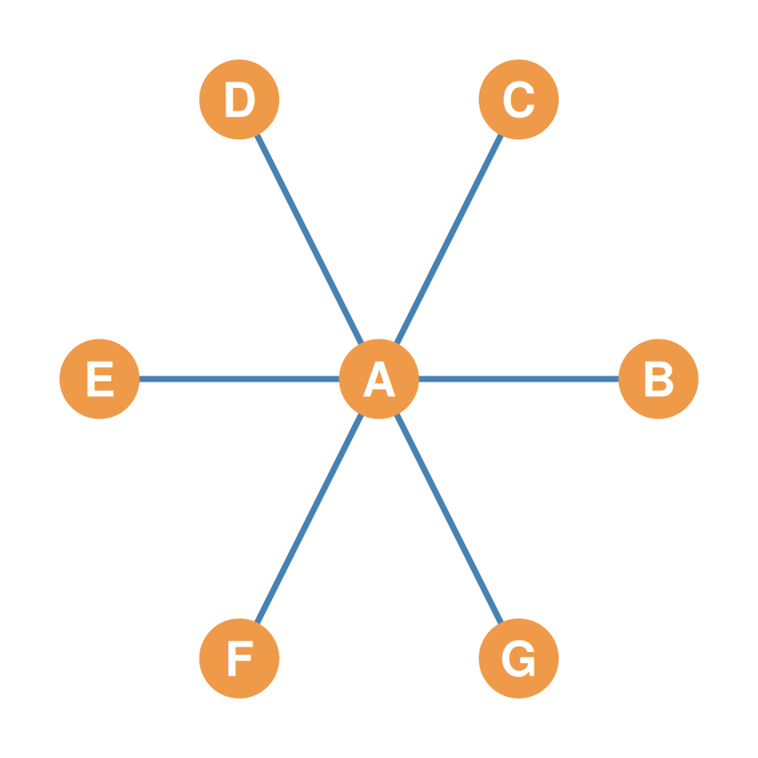
- In the star graph, all three centralities are maximized for the central node (Freeman 1979):
| A | B | C | D | E | F | G | |
|---|---|---|---|---|---|---|---|
| node | A | B | C | D | E | F | G |
| degree | 6 | 1 | 1 | 1 | 1 | 1 | 1 |
| closeness | 1.00 | 0.55 | 0.55 | 0.55 | 0.55 | 0.55 | 0.55 |
| betweenness | 15 | 0 | 0 | 0 | 0 | 0 | 0 |
- Degree: the central node has \(n - 1\); every satellite just 1
- Closeness: the center reaches everyone via paths of length 1; satellites need length 2 to reach each other
- Betweenness: the center stands on every shortest path linking satellite pairs (all length 2)
- That’s why these three are the “big three”: they are precisely the metrics maximized at the center of a star
Graph Centralization
- So far: centrality of nodes. We can also ask how centralized a whole graph is (Freeman 1979)
- Recipe: find the maximum degree \(k_{max}\); each node “falls short” of it by \(k_{max} - k_i\); add up the shortfalls
- But the raw sum grows with graph size — we need a fixed benchmark: the largest possible sum of shortfalls
- The star achieves it. In a star with \(n\) nodes (\(k_{max} = n - 1\)):
- the center falls short by \((n-1) - (n-1) = 0\)
- each of the \(n-1\) satellites (degree 1) falls short by \((n-1) - 1 = n-2\)
- total: \((n-1) \times (n-2)\)
\[C_G = \frac{\sum_i (k_{max} - k_i)}{(n-1)(n-2)}\]
Centralization of the Star: The Maximum

- Take the 7-node star: \(k_{max} = 6\)
- Center A falls short by \(6 - 6 = 0\)
- Each of the six satellites falls short by \(6 - 1 = 5\)
- Sum of shortfalls: \(0 + 6 \times 5 = \mathbf{30}\)
- Benchmark: \((n-1)(n-2) = 6 \times 5 = \mathbf{30}\)
- Degree centralization \(= 30/30 = \mathbf{1.00}\) — the maximum!
- The star is the most centralized graph of its size
Graph Degree Centralization: Worked Example
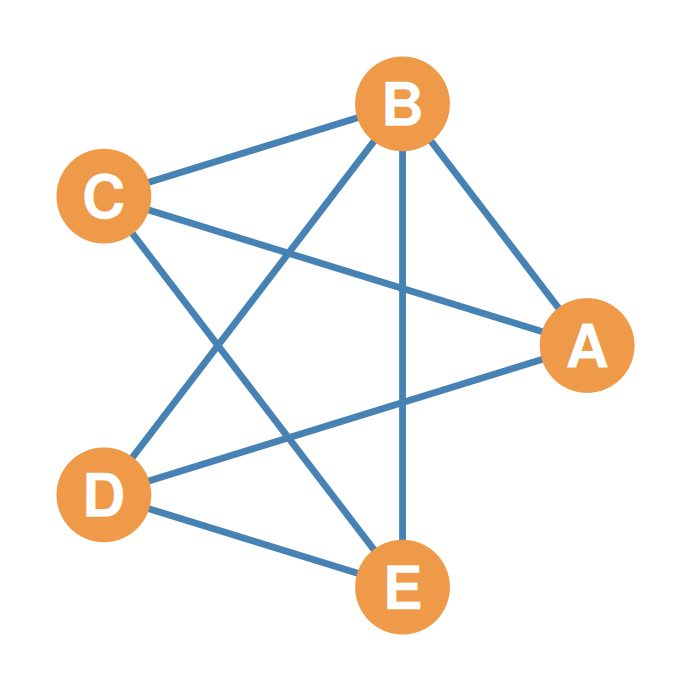
| node | k | diff |
|---|---|---|
| A | 3 | 1 |
| B | 4 | 0 |
| C | 3 | 1 |
| D | 3 | 1 |
| E | 3 | 1 |
- Sum of differences: \(1 + 0 + 1 + 1 + 1 = \mathbf{4}\)
- Star of the same order: \((n-1)(n-2) = 4 \times 3 = \mathbf{12}\)
- Degree centralization \(= 4/12 = \mathbf{0.33}\)
The Other Extreme: The Complete Graph
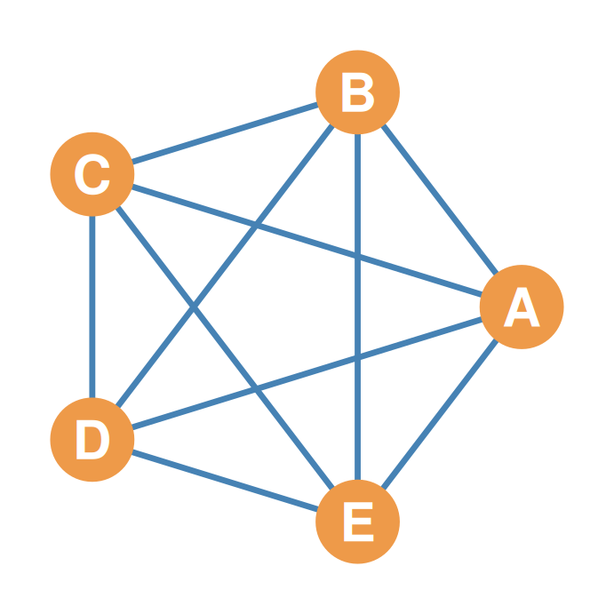
- In the complete graph on 5 nodes, everyone ties: \(k_{max} = 4\) and every \(k_i = 4\)
- Every shortfall: \(4 - 4 = 0\); sum of shortfalls: \(\mathbf{0}\)
- Degree centralization \(= 0/12 = \mathbf{0.00}\) — the minimum!
- Our 19-node example lands in between: \(71/306 = 0.23\)
- Centralization: how unevenly centrality is distributed across the whole graph — 0 (egalitarian) to 1 (star)
Part 6: Summary
Glossary of Key Terms
- Centrality metric: a summary index of a node’s position based on sums or averages of incident edges, geodesic lengths, or geodesic shares (Borgatti & Everett 2006)
- Degree centrality (\(C^{DEG}_i = \sum_j a_{ij}\)): number of edges incident to a node; row (or column) sums of the adjacency matrix (Nieminen 1974)
- Outdegree/Indegree centrality: the directed versions — sociability vs. status
- Normalized centrality: divided by \(N-1\) (or the appropriate maximum) so networks of different sizes are comparable (Freeman 1979)
- Geodesic distance \(d_{ij}\): length of the shortest path between \(i\) and \(j\)
- Closeness centrality (\(C^{CLOS}_i = (N-1)/\sum_j d_{ij}\)): inverse farness (Sabidussi 1966); only defined for connected graphs
Glossary of Key Terms (continued)
- Harmonic centrality (\(C^{HARM}_i = \frac{1}{N-1}\sum_j 1/d_{ij}\)): works even for disconnected graphs, since \(1/\infty = 0\) (Beauchamp 1965)
- Stress centrality: raw count of shortest paths a node stands on as inner node (Shimbel 1953)
- Pair dependency \(p_{i(k)j} = g_{i(k)j}/g_{ij}\): proportion of shortest paths between \(i\) and \(j\) through \(k\) (Freeman 1980)
- Betweenness centrality: sum of pair dependencies across all pairs (Freeman 1977)
- Star graph: the graph where all three big centralities are maximized at the center
- Graph centralization: how concentrated centrality is in the whole network, benchmarked against the star
Summary
- Centrality measures a node’s strategic location via three sources of “network goods”: incident edges, short geodesics, and inner-node shares of geodesics
- Degree centrality: local popularity; two versions in directed graphs (outdegree = sociability, indegree = status); normalize by \(N-1\)
- Closeness centrality: global reachability via the geodesic distance matrix; fails on disconnected graphs, where harmonic centrality takes over
- Betweenness centrality: brokerage — the summed proportion of shortest paths a node intermediates; stress centrality (raw counts) is its unweighted cousin
- The big three are all maximized at the center of a star graph, and the rankings disagree on real networks — which is exactly why we need all three
- Graph centralization scales this up: how star-like is the whole network?